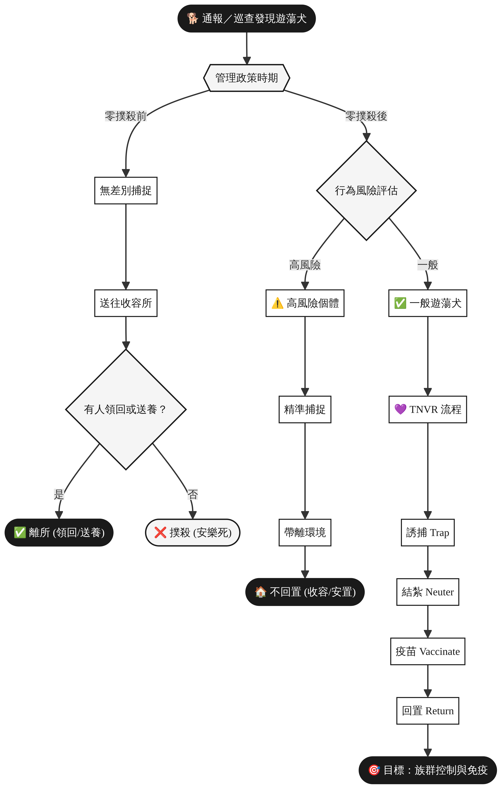

2017
零撲殺政策
正式實施年份
正式實施年份
~12天
零撲殺前
收容期限
收容期限
TNVR
誘捕・結紮・疫苗
回置人道管理
回置人道管理
2種
零撲殺後
分流處理路徑
分流處理路徑
政策核心差異對比
點擊各欄位可展開詳細說明
零撲殺前（2017年以前）
1
無差別捕捉
所有遊蕩犬一律捕捉，不論行為風險
2
送往收容所
統一送入公立動物收容所
3
等待領養期限（約12天）
領回/送養 → 離所
逾期 → 撲殺
零撲殺後（2017年起）
1
行為風險評估
依個體行為判斷是否為高風險
2
分流處理
高風險 → 精準捕捉帶離
一般 → TNVR 回置
3
目標導向管理
控制繁殖 ＋ 提升免疫覆蓋率
政策演進時間軸
點擊各事件可展開詳細說明
1998年
動物保護法施行
台灣正式施行《動物保護法》，建立基本動物保護框架，公立收容所制度開始運作，但仍允許在一定期限後對無人認領動物執行安樂死。
2000年代
TNVR 觀念引入台灣
民間動保團體開始推廣 Trap-Neuter-Vaccinate-Return（誘捕、結紮、疫苗、回置）概念，部分縣市試辦相關計畫，但尚未成為全國政策。
2015年
動物保護法修正通過
立法院通過《動物保護法》修正案，明定公立動物收容所不得對動物執行安樂死（即「零撲殺」條款），並設定兩年緩衝期，預計2017年正式實施。
2017年2月
零撲殺政策正式上路
《動物保護法》第12條修正條文正式生效，公立收容所全面禁止以安樂死方式處理無人認領動物。政府推動「以人道方式管理遊蕩犬」，TNVR 成為主要管理工具。
2017年後
行為風險分流機制建立
針對零撲殺後遊蕩犬問題，農業部（前農委會）建立「高風險個體精準捕捉」機制，對咬人、追車、危害農牧場或生態敏感區的個體採取不回置措施，與 TNVR 並行運作。
零撲殺前處理流程（2017年以前）
無差別捕捉、期限撲殺的舊制說明
▶
通報／巡查發現遊蕩犬
民眾通報或動物管理人員例行巡查發現遊蕩犬
1
無差別捕捉
不論犬隻行為、健康狀況或是否有主人，一律捕捉
2
送往公立動物收容所
統一送入縣市政府設立的公立動物收容所，進行基本健康檢查與登記
3
公告等待期（約12天）
依規定公告一定期間，等待原飼主認領或民眾認養
有人領回或送養 → 離所
無人認領 → 約12天後撲殺
4
撲殺（安樂死）
逾期未被認領的動物，依法執行安樂死。此制度造成大量動物死亡，引發社會廣泛批評，最終促成2015年修法。
舊制的主要問題
- 無差別捕捉導致有主人的犬隻也遭捕捉
- 收容所嚴重超收，動物福利條件惡劣
- 約12天的期限過短，難以有效媒合認養
- 大量動物遭撲殺，引發社會輿論強烈反彈
- 治標不治本，無法有效控制遊蕩犬族群數量
零撲殺後處理流程（2017年起）
依行為風險分流，人道管理的新制說明
核心原則：依「行為風險」分流
零撲殺政策不等於「放任不管」。政府依據遊蕩犬的行為風險，將其分為「高風險個體」與「一般遊蕩犬」兩類，分別採取不同的處理方式。
路徑一：高風險個體處理
1
精準捕捉
針對特定高風險個體進行定向捕捉，非無差別捕捉
2
帶離環境
將個體從原棲息環境帶離，避免持續危害
3
不回置（收容／安置／其他處理）
依個案情況安排收容、安置或其他合適的後續處理，不放回原環境
高風險個體認定標準：
咬人：曾發生咬傷人類事件的個體，屬於最高優先處理對象。依《動物保護法》相關規定，咬傷人的動物需進行隔離觀察，並視情況採取後續處置。
追車：有追逐車輛、機車等行為的個體，可能造成交通事故，屬於公共安全威脅，需優先帶離。
農牧場危害：侵入農場、牧場，攻擊家禽、牲畜的個體，對農民生計造成直接損害，需精準捕捉處理。
生態敏感區：進入國家公園、自然保護區、野生動物重要棲息地的遊蕩犬，對原生野生動物造成威脅，需優先帶離。
路徑二：一般遊蕩犬 → TNVR
對非高風險的一般遊蕩犬，採取 TNVR 人道管理，詳見「TNVR 詳解」頁籤。
最終目標：透過大規模結紮控制族群繁殖，同時提升犬隻狂犬病等疫苗覆蓋率，達到長期族群管理效果。
TNVR 人道管理機制詳解
點擊各步驟卡片查看詳細說明
誘捕
Trap
→
結紮
Neuter
→
疫苗
Vaccinate
→
回置
Return
誘捕（Trap）
使用人道誘捕籠，以食物引誘遊蕩犬進入，避免造成犬隻受傷或過度驚嚇。通常由受訓的動物管理人員或志工執行。誘捕地點記錄在案，作為後續回置的依據。
使用人道誘捕籠，以食物引誘遊蕩犬進入，避免造成犬隻受傷或過度驚嚇。通常由受訓的動物管理人員或志工執行。誘捕地點記錄在案，作為後續回置的依據。
結紮（Neuter）
由獸醫師執行外科手術，對公犬進行去勢、母犬進行卵巢子宮摘除。結紮後的犬隻以耳標（耳朵剪V形缺口）作為識別標記，避免重複捕捉。結紮是控制族群數量的核心手段。
由獸醫師執行外科手術，對公犬進行去勢、母犬進行卵巢子宮摘除。結紮後的犬隻以耳標（耳朵剪V形缺口）作為識別標記，避免重複捕捉。結紮是控制族群數量的核心手段。
疫苗（Vaccinate）
施打狂犬病疫苗及其他必要疫苗（如犬瘟熱、犬小病毒等）。提升遊蕩犬族群的免疫覆蓋率，可有效防止人畜共通傳染病的擴散，保護公共衛生安全。
施打狂犬病疫苗及其他必要疫苗（如犬瘟熱、犬小病毒等）。提升遊蕩犬族群的免疫覆蓋率，可有效防止人畜共通傳染病的擴散，保護公共衛生安全。
回置（Return）
手術恢復後，將犬隻放回原捕捉地點附近。回置的理由是：已結紮的犬隻會佔據地盤，抑制其他未結紮犬隻進入，形成「地盤效應」，長期有助於控制族群。
手術恢復後，將犬隻放回原捕捉地點附近。回置的理由是：已結紮的犬隻會佔據地盤，抑制其他未結紮犬隻進入，形成「地盤效應」，長期有助於控制族群。
TNVR 的管理目標
控制族群繁殖
透過大規模結紮，使遊蕩犬族群無法自然繁殖，長期達到族群數量下降的效果。研究顯示，當結紮率達到一定比例（通常建議70%以上），族群規模將逐漸縮小。
提升免疫覆蓋率
同步施打疫苗，提升遊蕩犬族群的整體免疫力，特別是狂犬病疫苗的覆蓋，可有效降低人畜共通傳染病的風險，保護社區公共衛生。
TNVR 的爭議與挑戰
TNVR 政策在台灣實施以來，各方對其效果仍存在討論。支持者認為這是兼顧動物福利與公共安全的人道方式；批評者則指出執行率不足、族群數量未見明顯下降、對野生動物的威脅持續等問題。政府持續調整配套措施，包括強化高風險個體的精準捕捉、提升收容所收養率，以及推動責任區飼養管理等方向。
完整政策流程圖
零撲殺前後完整決策流程一覽（可點擊放大）

點擊圖片可放大檢視
靜態流程圖（可下載）
高解析度流程圖，適合列印或簡報使用